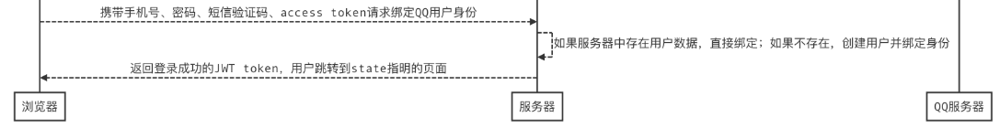

绑定用户身份接口
如果用户是首次使用QQ登录，则需要绑定用户，页面如下：

业务逻辑：
- 用户需要填写手机号、密码、短信验证码
- 如果用户未在美多商城注册过，则会将手机号作为用户名为用户创建一个美多账户，并绑定用户
- 如果用户已在美多商城注册过，则检验密码后直接绑定用户

后端接口设计
请求方式： POST /oauth/qq/user/
作用:

因为是第一次注册, 所以让用户在本地创建一个账户, 和QQ账户绑定.
请求参数： JSON 或 表单
| 参数 | 类型 | 是否必须 | 说明 |
|---|---|---|---|
| mobile | str | 是 | 手机号 |
| password | str | 是 | 密码 |
| sms_code | str | 是 | 短信验证码 |
| access_token | str | 是 | 凭据 （包含openid) |
返回数据： JSON
| 返回值 | 类型 | 是否必须 | 说明 |
|---|---|---|---|
| token | str | 是 | JWT token |
| id | int | 是 | 用户id |
| username | str | 是 | 用户名 |
制定第三次请求:
接下来, 我们需要在当前视图类中, 增加一个 POST 函数, 满足上面界面的需求.
即, 第三次请求.
class OAuthQQUserView(APIView):
def post(self, request):
'''
绑定QQ登录用户:
1. 获取参数并进行校验:
(参数完整性, 手机号格式, 短信验证码, access_token)
2. 保存绑定qq登录用户的信息.
2.1 如果用户已注册, 直接保存绑定信息
2.2 如果用户未注册, 先创建一个新用户, 然后保存绑定信息
'''
pass
因为上面的检验比较多, 所以我们可以定义 序列化器 来辅助我们进行校验.
辅助类中函数了解:
在 OAuthQQ 辅助类中有如下的函数, 会在 序列化器 中帮到我们:
# 类函数
@classmethod
def check_save_user_token(cls, token, secret_key=None, expires=None):
"""
对 token 进行校验:
token: 对 openid 加密之后生成的 token
secret_key: 密钥
expires: token有效时间
"""
# 判断是否有秘钥, 如果为 None, 则使用默认的
if secret_key is None:
secret_key = cls.SECRET_KEY
# 判断是否有过期时间, 如果为 None, 则使用默认的
if expires is None:
expires = cls.EXPIRES_IN
# 使用 itsdangerous 包,进行加密.
# 先获取 itsdangerous 类的对象
serializer = TJWSSerializer(secret_key, expires)
try:
# 对数据进行解密: 获取原有值
data = serializer.loads(token)
except BadData:
# 如果不存在, 返回 None
return None
else:
# 如果存在, 获取其中的 openid 返回
return data.get('openid')
新建 oauth / serializers.py 文件，
class OAuthQQUserSerializer(serializers.ModelSerializer):
"""
保存QQ用户序列化器
"""
sms_code = serializers.CharField(label='短信验证码', write_only=True)
access_token = serializers.CharField(label='操作凭证', write_only=True)
token = serializers.CharField(read_only=True)
mobile = serializers.RegexField(label='手机号', regex=r'^1[3-9]\d{9}$')
class Meta:
model = User
fields = ('mobile', 'password', 'sms_code', 'access_token', 'id', 'username', 'token')
extra_kwargs = {
'username': {
'read_only': True
},
'password': {
'write_only': True,
'min_length': 8,
'max_length': 20,
'error_messages': {
'min_length': '仅允许8-20个字符的密码',
'max_length': '仅允许8-20个字符的密码',
}
}
}
def validate(self, attrs):
# 一. 检验 access_token
# 获取前端传过来的 access_token
access_token = attrs['access_token']
# 对 access_token 进行解密, 解密调用的函数是工具类中定义的
# 得到 openid
openid = OAuthQQ.check_save_user_token(access_token)
# 如果不存在 openid
if not openid:
# 报错
raise serializers.ValidationError('无效的access_token')
# 如果存在:
# 我们把 openid 保存到 attrs 这个字典中
attrs['openid'] = openid
# 二. 检验短信验证码
# 获取 attrs 里面的 mobile 和 sms_code
mobile = attrs['mobile']
sms_code = attrs['sms_code']
# 调用 redis 连接器函数
# 获取 verify_codes 这个 redis仓库的连接器对象
redis_conn = get_redis_connection('verify_codes')
# 从 redis 仓库中 获取对应的 sms_code值
real_sms_code = redis_conn.get('sms_code_%s' % mobile)
# 判断 redis 中的验证码和发送过来的验证码是否相同:
if real_sms_code.decode() != sms_code:
# 不同, 报错:
raise serializers.ValidationError('短信验证码错误')
# 三.检查用户密码
try:
# 根据 mobile 查看 User 表中是否有当前用户
user = User.objects.get(mobile=mobile)
except User.DoesNotExist:
# 如果没有, 未注册, pass
pass
else:
# 如果有, 取出 password
password = attrs['password']
# 检查 password 是否正确
if not user.check_password(password):
# 不正确, 报错:
raise serializers.ValidationError('密码错误')
# 正确, 保存到 attrs 中
attrs['user'] = user
# 最终返回
return attrs
# 重写 create 方法
def create(self, validated_data):
# 从上面检验过的数据中获取相关参数:
openid = validated_data['openid']
user = validated_data.get('user')
mobile = validated_data['mobile']
password = validated_data['password']
# 判断用户是否存在
if not user:
# 如果用户不存在，注册(创建)用户
user = User.objects.create_user(
username=mobile,
mobile=mobile,
password=password
)
# 将 user 与 openid 绑定到一起, 保存到当前模型类中
OAuthQQUser.objects.create(
user=user,
openid=openid
)
# 签发jwt token
jwt_payload_handler = api_settings.JWT_PAYLOAD_HANDLER
jwt_encode_handler = api_settings.JWT_ENCODE_HANDLER
payload = jwt_payload_handler(user)
token = jwt_encode_handler(payload)
# 将生成的 jwt_token 绑定到 user 上
user.token = token
return user
在 oauth / views.py 修改 QQAuthUserView 视图
这里因为继承自 CreateAPIView ,所以 post 函数可以省略不写, 但是 get 还是需要添加:
class QQAuthUserView(CreateAPIView):
# 设置序列化器为 OAuthQQUserSerializer
serializer_class = OAuthQQUserSerializer
# get 请求函数还是需要添加, 因为这里继承自 CreateAPIView
def get(self, request):
...
前端
在 oauth_back.js 中实现
// 保存
on_submit: function(){
this.check_pwd();
this.check_phone();
this.check_sms_code();
if(this.error_password == false && this.error_phone == false && this.error_sms_code == false) {
axios.post(this.host + '/oauth/qq/user/', {
password: this.password,
mobile: this.mobile,
sms_code: this.sms_code,
access_token: this.access_token
}, {
responseType: 'json',
})
.then(response => {
// 记录用户登录状态
sessionStorage.clear();
localStorage.clear();
localStorage.token = response.data.token;
localStorage.user_id = response.data.id;
localStorage.username = response.data.username;
location.href = this.get_query_string('state');
})
.catch(error=> {
if (error.response.status == 400) {
this.error_sms_code_message = error.response.data.message;
this.error_sms_code = true;
} else {
console.log(error.response.data);
}
})
}
}